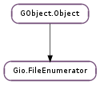

| Gio.FileEnumerator.__next__ | |
| close(cancellable) | |
| close_async(io_priority, cancellable, callback, *user_data) | |
| close_finish(result) | |
| get_child(info) | |
| get_container() | |
| has_pending() | |
| is_closed() | |
| next_file(cancellable) | |
| next_files_async(num_files, io_priority, cancellable, callback, *user_data) | |
| next_files_finish(result) | |
| set_pending(pending) |
| Name | Type | Flags | Description |
|---|---|---|---|
| container | Gio.File | w/c | The container that is being enumerated |
None
| Name | Type | Access |
|---|---|---|
| parent_instance | GObject.Object | r |
Bases: GObject.Object
Gio.FileEnumerator allows you to operate on a set of Gio.File s, returning a Gio.FileInfo structure for each file enumerated (e.g. Gio.File.enumerate_children () will return a Gio.FileEnumerator for each of the children within a directory).
To get the next file’s information from a Gio.FileEnumerator, use Gio.FileEnumerator.next_file () or its asynchronous version, Gio.FileEnumerator.next_files_async (). Note that the asynchronous version will return a list of Gio.FileInfo s, whereas the synchronous will only return the next file in the enumerator.
To close a Gio.FileEnumerator, use Gio.FileEnumerator.close (), or its asynchronous version, Gio.FileEnumerator.close_async (). Once a Gio.FileEnumerator is closed, no further actions may be performed on it, and it should be freed with GObject.Object.unref ().
| Parameters: | cancellable (Gio.Cancellable or None) – optional Gio.Cancellable object, None to ignore. |
|---|---|
| Raises: | GLib.GError |
| Returns: | True on success or False on error. |
| Return type: | bool |
Releases all resources used by this enumerator, making the enumerator return Gio.IOErrorEnum.CLOSED on all calls.
This will be automatically called when the last reference is dropped, but you might want to call this function to make sure resources are released as early as possible.
| Parameters: |
|
|---|
Asynchronously closes the file enumerator.
If cancellable is not None, then the operation can be cancelled by triggering the cancellable object from another thread. If the operation was cancelled, the error Gio.IOErrorEnum.CANCELLED will be returned in Gio.FileEnumerator.close_finish ().
| Parameters: | result (Gio.AsyncResult) – a Gio.AsyncResult. |
|---|---|
| Raises: | GLib.GError |
| Returns: | True if the close operation has finished successfully. |
| Return type: | bool |
Finishes closing a file enumerator, started from Gio.FileEnumerator.close_async ().
If the file enumerator was already closed when Gio.FileEnumerator.close_async () was called, then this function will report Gio.IOErrorEnum.CLOSED in error, and return False. If the file enumerator had pending operation when the close operation was started, then this function will report Gio.IOErrorEnum.PENDING, and return False. If cancellable was not None, then the operation may have been cancelled by triggering the cancellable object from another thread. If the operation was cancelled, the error Gio.IOErrorEnum.CANCELLED will be set, and False will be returned.
| Parameters: | info (Gio.FileInfo) – a Gio.FileInfo gotten from Gio.FileEnumerator.next_file () or the async equivalents. |
|---|---|
| Returns: | a Gio.File for the Gio.FileInfo passed it. |
| Return type: | Gio.File |
Return a new Gio.File which refers to the file named by info in the source directory of enumerator. This function is primarily intended to be used inside loops with Gio.FileEnumerator.next_file ().
This is a convenience method that’s equivalent to:
gchar *name = g_file_info_get_name (info);
GFile *child = g_file_get_child (g_file_enumerator_get_container (enumr),
name);
| Returns: | the Gio.File which is being enumerated. |
|---|---|
| Return type: | Gio.File |
Get the Gio.File container which is being enumerated.
| Returns: | True if the enumerator has pending operations. |
|---|---|
| Return type: | bool |
Checks if the file enumerator has pending operations.
| Returns: | True if the enumerator is closed. |
|---|---|
| Return type: | bool |
Checks if the file enumerator has been closed.
| Parameters: | cancellable (Gio.Cancellable or None) – optional Gio.Cancellable object, None to ignore. |
|---|---|
| Raises: | GLib.GError |
| Returns: | A Gio.FileInfo or None on error or end of enumerator. Free the returned object with GObject.Object.unref () when no longer needed. |
| Return type: | Gio.FileInfo |
Returns information for the next file in the enumerated object. Will block until the information is available. The Gio.FileInfo returned from this function will contain attributes that match the attribute string that was passed when the Gio.FileEnumerator was created.
On error, returns None and sets error to the error. If the enumerator is at the end, None will be returned and error will be unset.
| Parameters: |
|
|---|
Request information for a number of files from the enumerator asynchronously. When all i/o for the operation is finished the callback will be called with the requested information.
The callback can be called with less than num_files files in case of error or at the end of the enumerator. In case of a partial error the callback will be called with any succeeding items and no error, and on the next request the error will be reported. If a request is cancelled the callback will be called with Gio.IOErrorEnum.CANCELLED.
During an async request no other sync and async calls are allowed, and will result in Gio.IOErrorEnum.PENDING errors.
Any outstanding i/o request with higher priority (lower numerical value) will be executed before an outstanding request with lower priority. Default priority is GLib.PRIORITY_DEFAULT.
| Parameters: | result (Gio.AsyncResult) – a Gio.AsyncResult. |
|---|---|
| Raises: | GLib.GError |
| Returns: | a GLib.List of Gio.FileInfo s. You must free the list with GLib.List.free () and unref the infos with GObject.Object.unref () when you’re done with them. |
| Return type: | [Gio.FileInfo] |
Finishes the asynchronous operation started with Gio.FileEnumerator.next_files_async ().